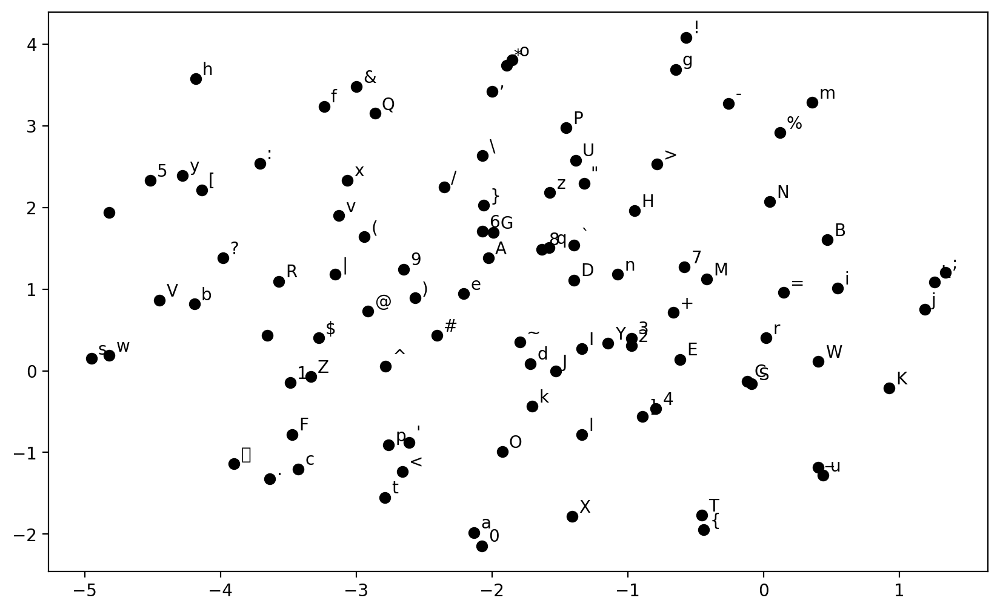
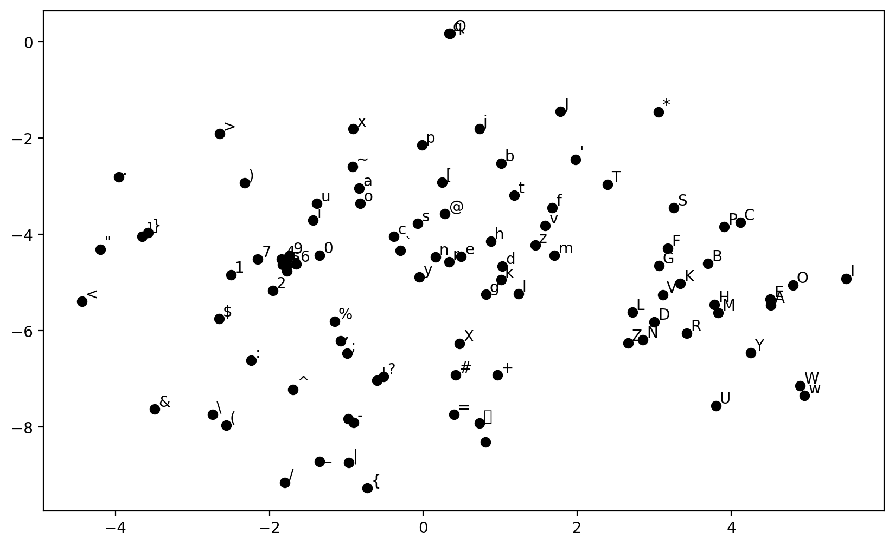

import torch
import torch.nn.functional as F
from torch import nn
import pandas as pd
import numpy as np
import matplotlib.pyplot as plt
from pprint import pprint
from sklearn.manifold import TSNE
import torch._dynamo
torch._dynamo.config.suppress_errors = True
%matplotlib inline
%config InlineBackend.figure_format = "retina"Check out the Streamlit App hosted at https://tensionflowcharpredict.streamlit.app/
if (torch.cuda.is_available()):
device = torch.device("cuda")
elif (torch.backends.mps.is_available()):
device = torch.device("mps")
else:
device = torch.device("cpu")
print(device)cudaEnWik8 Corpus
with open("./enwik8", 'r') as xml_file:
wiki = xml_file.read()
print(len(wiki))
wiki = wiki[:(len(wiki)//10)]
print(len(wiki))
print(wiki[:5000])
new_wiki = ""
for char in wiki:
if char not in ['\t', '\n', ' ', '!', '"', '#', '$', '%', '&', "'", '(', ')', '*', '+', ',', '-', '.', '/', '0', '1', '2', '3', '4', '5', '6', '7', '8', '9', ':', ';', '<', '=', '>', '?', '@', 'A', 'B', 'C', 'D', 'E', 'F', 'G', 'H', 'I', 'J', 'K', 'L', 'M', 'N', 'O', 'P', 'Q', 'R', 'S', 'T', 'U', 'V', 'W', 'X', 'Y', 'Z', '[', '\\', ']', '^', '_', 'a', 'b', 'c', 'd', 'e', 'f', 'g', 'h', 'i', 'j', 'k', 'l', 'm', 'n', 'o', 'p', 'q', 'r', 's', 't', 'u', 'v', 'w', 'x', 'y', 'z', '{', '|', '}', '~']:
continue
new_wiki += char
characters = sorted(list(set(new_wiki)))
print(len(characters))
print(characters)99621832
9962183
<mediawiki xmlns="http://www.mediawiki.org/xml/export-0.3/" xmlns:xsi="http://www.w3.org/2001/XMLSchema-instance" xsi:schemaLocation="http://www.mediawiki.org/xml/export-0.3/ http://www.mediawiki.org/xml/export-0.3.xsd" version="0.3" xml:lang="en">
<siteinfo>
<sitename>Wikipedia</sitename>
<base>http://en.wikipedia.org/wiki/Main_Page</base>
<generator>MediaWiki 1.6alpha</generator>
<case>first-letter</case>
<namespaces>
<namespace key="-2">Media</namespace>
<namespace key="-1">Special</namespace>
<namespace key="0" />
<namespace key="1">Talk</namespace>
<namespace key="2">User</namespace>
<namespace key="3">User talk</namespace>
<namespace key="4">Wikipedia</namespace>
<namespace key="5">Wikipedia talk</namespace>
<namespace key="6">Image</namespace>
<namespace key="7">Image talk</namespace>
<namespace key="8">MediaWiki</namespace>
<namespace key="9">MediaWiki talk</namespace>
<namespace key="10">Template</namespace>
<namespace key="11">Template talk</namespace>
<namespace key="12">Help</namespace>
<namespace key="13">Help talk</namespace>
<namespace key="14">Category</namespace>
<namespace key="15">Category talk</namespace>
<namespace key="100">Portal</namespace>
<namespace key="101">Portal talk</namespace>
</namespaces>
</siteinfo>
<page>
<title>AaA</title>
<id>1</id>
<revision>
<id>32899315</id>
<timestamp>2005-12-27T18:46:47Z</timestamp>
<contributor>
<username>Jsmethers</username>
<id>614213</id>
</contributor>
<text xml:space="preserve">#REDIRECT [[AAA]]</text>
</revision>
</page>
<page>
<title>AlgeriA</title>
<id>5</id>
<revision>
<id>18063769</id>
<timestamp>2005-07-03T11:13:13Z</timestamp>
<contributor>
<username>Docu</username>
<id>8029</id>
</contributor>
<minor />
<comment>adding cur_id=5: {{R from CamelCase}}</comment>
<text xml:space="preserve">#REDIRECT [[Algeria]]{{R from CamelCase}}</text>
</revision>
</page>
<page>
<title>AmericanSamoa</title>
<id>6</id>
<revision>
<id>18063795</id>
<timestamp>2005-07-03T11:14:17Z</timestamp>
<contributor>
<username>Docu</username>
<id>8029</id>
</contributor>
<minor />
<comment>adding to cur_id=6 {{R from CamelCase}}</comment>
<text xml:space="preserve">#REDIRECT [[American Samoa]]{{R from CamelCase}}</text>
</revision>
</page>
<page>
<title>AppliedEthics</title>
<id>8</id>
<revision>
<id>15898943</id>
<timestamp>2002-02-25T15:43:11Z</timestamp>
<contributor>
<ip>Conversion script</ip>
</contributor>
<minor />
<comment>Automated conversion</comment>
<text xml:space="preserve">#REDIRECT [[Applied ethics]]
</text>
</revision>
</page>
<page>
<title>AccessibleComputing</title>
<id>10</id>
<revision>
<id>15898945</id>
<timestamp>2003-04-25T22:18:38Z</timestamp>
<contributor>
<username>Ams80</username>
<id>7543</id>
</contributor>
<minor />
<comment>Fixing redirect</comment>
<text xml:space="preserve">#REDIRECT [[Accessible_computing]]</text>
</revision>
</page>
<page>
<title>AdA</title>
<id>11</id>
<revision>
<id>15898946</id>
<timestamp>2002-09-22T16:02:58Z</timestamp>
<contributor>
<username>Andre Engels</username>
<id>300</id>
</contributor>
<minor />
<text xml:space="preserve">#REDIRECT [[Ada programming language]]</text>
</revision>
</page>
<page>
<title>Anarchism</title>
<id>12</id>
<revision>
<id>42136831</id>
<timestamp>2006-03-04T01:41:25Z</timestamp>
<contributor>
<username>CJames745</username>
<id>832382</id>
</contributor>
<minor />
<comment>/* Anarchist Communism */ too many brackets</comment>
<text xml:space="preserve">{{Anarchism}}
'''Anarchism''' originated as a term of abuse first used against early [[working class]] [[radical]]s including the [[Diggers]] of the [[English Revolution]] and the [[sans-culotte|''sans-culottes'']] of the [[French Revolution]].[http://uk.encarta.msn.com/encyclopedia_761568770/Anarchism.html] Whilst the term is still used in a pejorative way to describe ''"any act that used violent means to destroy the organization of society"''<ref>[http://www.cas.sc.edu/socy/faculty/deflem/zhistorintpolency.html History of International Police Cooperation], from the final protocols of the "International Conference of Rome for the Social Defense Against Anarchists", 1898</ref>, it has also been taken up as a positive label by self-defined anarchists.
The word '''anarchism''' is [[etymology|derived from]] the [[Greek language|Greek]] ''[[Wiktionar
96
['\t', '\n', ' ', '!', '"', '#', '$', '%', '&', "'", '(', ')', '*', '+', ',', '-', '.', '/', '0', '1', '2', '3', '4', '5', '6', '7', '8', '9', ':', ';', '<', '=', '>', '?', '@', 'A', 'B', 'C', 'D', 'E', 'F', 'G', 'H', 'I', 'J', 'K', 'L', 'M', 'N', 'O', 'P', 'Q', 'R', 'S', 'T', 'U', 'V', 'W', 'X', 'Y', 'Z', '[', '\\', ']', '^', '_', 'a', 'b', 'c', 'd', 'e', 'f', 'g', 'h', 'i', 'j', 'k', 'l', 'm', 'n', 'o', 'p', 'q', 'r', 's', 't', 'u', 'v', 'w', 'x', 'y', 'z', '{', '|', '}', '~']stoi = {s : i + 1 for i, s in enumerate(characters)}
stoi["`"] = 0 ## Pad Character
itos = {i : s for s, i in stoi.items()}
pprint(itos){0: '`',
1: '\t',
2: '\n',
3: ' ',
4: '!',
5: '"',
6: '#',
7: '$',
8: '%',
9: '&',
10: "'",
11: '(',
12: ')',
13: '*',
14: '+',
15: ',',
16: '-',
17: '.',
18: '/',
19: '0',
20: '1',
21: '2',
22: '3',
23: '4',
24: '5',
25: '6',
26: '7',
27: '8',
28: '9',
29: ':',
30: ';',
31: '<',
32: '=',
33: '>',
34: '?',
35: '@',
36: 'A',
37: 'B',
38: 'C',
39: 'D',
40: 'E',
41: 'F',
42: 'G',
43: 'H',
44: 'I',
45: 'J',
46: 'K',
47: 'L',
48: 'M',
49: 'N',
50: 'O',
51: 'P',
52: 'Q',
53: 'R',
54: 'S',
55: 'T',
56: 'U',
57: 'V',
58: 'W',
59: 'X',
60: 'Y',
61: 'Z',
62: '[',
63: '\\',
64: ']',
65: '^',
66: '_',
67: 'a',
68: 'b',
69: 'c',
70: 'd',
71: 'e',
72: 'f',
73: 'g',
74: 'h',
75: 'i',
76: 'j',
77: 'k',
78: 'l',
79: 'm',
80: 'n',
81: 'o',
82: 'p',
83: 'q',
84: 'r',
85: 's',
86: 't',
87: 'u',
88: 'v',
89: 'w',
90: 'x',
91: 'y',
92: 'z',
93: '{',
94: '|',
95: '}',
96: '~'}Generating the Training Samples

block_size = 50
X, Y = [], []
context = [0] * block_size
for idx in range(len(new_wiki)):
ix = stoi[new_wiki[idx]]
X.append(context)
Y.append(ix)
# print(''.join(itos[i] for i in context), '--->', itos[ix])
context = context[1:] + [ix]
X = torch.tensor(X).to(device)
Y = torch.tensor(Y).to(device)X.shape, Y.shape(torch.Size([9924444, 50]), torch.Size([9924444]))# Embedding layer for the context
emb_dim = 25
emb = torch.nn.Embedding(len(stoi), emb_dim)emb.weight.shapetorch.Size([97, 25])Function to visualize the embedding in 2d space using t-SNE
def plot_emb(emb, itos, ax = None):
if emb.weight.shape[1] != 2:
tsne = TSNE(n_components = 2)
emb_new = tsne.fit_transform(emb.weight.detach().cpu().numpy())
if ax is None:
fig, ax = plt.subplots(figsize = (10, 6))
for i in range(len(itos)):
if emb.weight.shape[1] == 2:
x, y = emb.weight[i].detach().cpu().numpy()
ax.scatter(x, y, color='k')
ax.text(x + 0.05, y + 0.05, itos[i])
else:
x, y = emb_new[i]
ax.scatter(x, y, color = 'k')
ax.text(x + 0.05, y + 0.05, itos[i])
return ax
plot_emb(emb, itos)/usr/local/lib/python3.10/dist-packages/IPython/core/events.py:89: UserWarning: Glyph 9 ( ) missing from current font.
func(*args, **kwargs)
/usr/local/lib/python3.10/dist-packages/IPython/core/pylabtools.py:151: UserWarning: Glyph 9 ( ) missing from current font.
fig.canvas.print_figure(bytes_io, **kw)
Structure of the MLP


class NextChar(nn.Module):
def __init__(self, block_size, vocab_size, emb_dim, hidden_size1, hidden_size2):
super().__init__()
self.emb = nn.Embedding(vocab_size, emb_dim)
self.lin1 = nn.Linear(block_size * emb_dim, hidden_size1)
self.lin2 = nn.Linear(hidden_size1, hidden_size2)
self.lin3 = nn.Linear(hidden_size2, vocab_size)
def forward(self, x):
x = self.emb(x)
x = x.view(x.shape[0], -1)
x = torch.tanh(self.lin1(x))
x = torch.tanh(self.lin2(x))
x = self.lin3(x)
return xmodel = NextChar(block_size, len(stoi), emb_dim, 300, 100).to(device)
model = torch.compile(model)for param_name, param in model.named_parameters():
print(param_name, param.shape)_orig_mod.emb.weight torch.Size([97, 25])
_orig_mod.lin1.weight torch.Size([300, 1250])
_orig_mod.lin1.bias torch.Size([300])
_orig_mod.lin2.weight torch.Size([100, 300])
_orig_mod.lin2.bias torch.Size([100])
_orig_mod.lin3.weight torch.Size([97, 100])
_orig_mod.lin3.bias torch.Size([97])Generating names from untrained model
import warnings
warnings.filterwarnings("ignore")
g = torch.Generator()
g.manual_seed(4200)
def generate_text(model, itos, stoi, block_size, max_len, start_str = None):
context = [0] * block_size
if start_str:
for s in start_str:
context = context[1:] + [stoi[s]]
text = start_str if start_str else ""
for i in range(max_len):
x = torch.tensor(context).view(1, -1).to(device)
y_pred = model(x)
ix = torch.distributions.categorical.Categorical(logits = y_pred).sample().item()
ch = itos[ix]
text += ch
context = context[1:] + [ix]
return text
my_str = generate_text(model, itos, stoi, block_size, 1000, "this is ")
decoded_string = bytes(my_str, "utf-8").decode("unicode_escape")
print(decoded_string)this is j J=w$k.B{g7Z_=Y}|u4fbt(j'!\s20,xjUPl}Ie+1#nWT!4lZ6}+4;PX u"`,ebRT@;vh,9R2^GHL/q79o:~BhZWW~r'l}crAt8 l3,Z0}Hc.I,_7eX5Xy:@Tqe#G_X
*nlHop:"=&ZEfwB(*MYOqi=^$()SKzi^anUOjv]TS ^-^p6?j;:Qp+L,b*0sx|SdN*<W_yG_@L[~_O4h],cirlS5*25}u$Ef,e\Xy#W:!>{G<K9)\@jC|+dN&n_Zdb"u'DgCZV<[+E/H'@=KplHJ-NZMpG[[k/Dzb6_+0O=n,fvt{J{u!kNwewv(RDsMAS@j_[#1Ml&O`vP;!i8yn9Ei|Q6u>f";bH|~mfch_e/%U.fq30ZF21}i4Id}yWnAR9do`9d`W#ZbOT{U@oS$(0%)+[^LX2M]kGxQ?6N!NeY_"3We
PSR o/uqnx/*&z@_sv-X1S<=Rrj'>`2K=%Z
}RNRh 2\`vOcL: :hq2Lo_xOd`Pis\8.t#xAY k#v!n^>L.-f-dx11&j 5b8>Ab4!_fI"<1Q)!zNk~`D_X|3
s#G[yX[E9BaA]SDGwHD'lJxSyJBW0yzV
)0r7"}9c{>_Zb;)] T0@YWLs?wLRo8V
.fO"BZoCjN3M,c!XtsTXlG< x#g0~hlzjSgq<*cww9v%9)pPRPfQ5:6`Zh3h)=UZ{a=Z9yuTLTdp?>3m[rIPr ,f}p 5F&z%@"a$!-\eMciXSOD?r gZD55#08ehG\K\%:Mt'+RMu&1K/HL}<8`a%U@AX]}<ELk;R,jHU+ .P6Bt7$(K8!kw!S|?i3j)p@[_I1VFd&dDo0xD~U Qobx<kII~!2u"]iQs96>FdUeJr%4:0)6^D>_*sFmKqDO'(PkV`/?[SR;+
tXEy#-R_^,AjO#4ZHsx 0Bcyr Tf(53='rgZ~EQ_P<hK&'@
"|lg
*<pO{]k)P|jj"\Aj9nz(B*h>]'${r,q,jhvbqt5b$G-)PLX,4Z w6#7pQ.*Tu|ErModel Training
loss_fn = nn.CrossEntropyLoss()
optimizer = torch.optim.AdamW(model.parameters(), lr = 0.02)
batch_size = 4096
print_every = 5
for epoch in range(10000):
total_loss = 0
for i in range(0, X.shape[0], batch_size):
x = X[i : i + batch_size]
y = Y[i : i + batch_size]
y_pred = model(x)
loss = loss_fn(y_pred.view(-1, len(stoi)), y.view(-1))
optimizer.zero_grad()
loss.backward()
optimizer.step()
total_loss += loss.item()
if epoch % print_every == 0:
average_loss = total_loss / (X.shape[0] / batch_size)
print(f"Epoch {epoch}, Loss: {average_loss}")Epoch 0, Loss: 2.8350139496105684
Epoch 5, Loss: 2.3314288813606963
Epoch 10, Loss: 2.295441793260227
Epoch 15, Loss: 2.2891312827811183
Epoch 20, Loss: 2.2772508836170773
Epoch 25, Loss: 2.270781237766947
Epoch 30, Loss: 2.265585624811277
Epoch 35, Loss: 2.2659898983344493
Epoch 40, Loss: 2.262110797554896
Epoch 45, Loss: 2.256057252406753
Epoch 50, Loss: 2.2499491346760996
Epoch 55, Loss: 2.2512255706146957
Epoch 60, Loss: 2.2480657476478894
Epoch 65, Loss: 2.242697944089291
Epoch 70, Loss: 2.2402018668078614
Epoch 75, Loss: 2.241432100314637
Epoch 80, Loss: 2.239732624009277
Epoch 85, Loss: 2.2423875842910492
Epoch 90, Loss: 2.238643688931875
Epoch 95, Loss: 2.2355767357427814
Epoch 100, Loss: 2.2356967695992984
Epoch 105, Loss: 2.2369650068979148
Epoch 110, Loss: 2.235218913750318
Epoch 115, Loss: 2.231936918430503
Epoch 120, Loss: 2.2326218815552714
Epoch 125, Loss: 2.2282290417226394
Epoch 130, Loss: 2.2294567735641615
Epoch 135, Loss: 2.230277611866996
Epoch 140, Loss: 2.2264508139820367
Epoch 145, Loss: 2.226664670691344
Epoch 150, Loss: 2.222574600766835
Epoch 155, Loss: 2.223613429428169
Epoch 160, Loss: 2.2268505072934928
Epoch 165, Loss: 2.221693789581917
Epoch 170, Loss: 2.224302132332654
Epoch 175, Loss: 2.222144948652358
Epoch 180, Loss: 2.217298775164697
Epoch 185, Loss: 2.216365213120464
Epoch 190, Loss: 2.2159983004945683
Epoch 195, Loss: 2.2175819541315818
Epoch 200, Loss: 2.2201713257609113
Epoch 205, Loss: 2.215771289022038KeyboardInterrupt: Saving the model
torch.save(model.state_dict(), "modelWiki.pth")model.state_dict()OrderedDict([('_orig_mod.emb.weight',
tensor([[-0.2127, -0.2873, 0.2147, ..., -0.5042, 0.1505, 0.4789],
[-0.0885, -1.3026, -0.3783, ..., 2.1375, -0.1139, -0.6655],
[ 1.6558, -0.5986, 0.4964, ..., 1.9797, 0.1884, -0.6399],
...,
[ 0.9190, -1.1540, -2.1688, ..., 3.3804, -1.6150, -0.1725],
[ 0.5419, -0.5989, 1.6368, ..., 0.7716, 0.8263, 1.3183],
[-0.0912, 0.2951, 1.2806, ..., -0.8260, 0.4481, 0.3524]],
device='cuda:0')),
('_orig_mod.lin1.weight',
tensor([[-0.9020, 0.2586, 1.4684, ..., -5.8197, -1.0540, 0.1886],
[ 0.6868, 1.0851, -0.5121, ..., -1.9412, 1.7108, 1.2154],
[-0.5979, -0.4234, 0.4775, ..., -1.3133, 1.6652, -3.1809],
...,
[-0.2150, 0.7051, 0.4703, ..., -1.0828, 0.1105, -1.1311],
[ 0.8771, -1.0792, 0.0472, ..., -3.4655, 3.1264, 0.2390],
[-0.1852, 0.8179, -0.8811, ..., 1.0833, -0.4643, 4.4138]],
device='cuda:0')),
('_orig_mod.lin1.bias',
tensor([ 1.3034e-01, -2.9085e-01, -3.8681e-01, 3.6817e-03, 6.8255e-01,
-9.4624e-01, -8.6049e-01, 6.1044e-02, -1.1053e+00, -7.3416e-02,
7.3485e-02, -8.2192e-02, -1.3197e+00, -1.2413e+00, 2.1306e-01,
2.3019e-01, -1.1447e+00, 3.7206e-03, -5.2200e-01, 4.1158e-01,
1.5047e+00, -5.7143e-01, 4.5197e-01, 4.7846e-01, -1.4956e+00,
6.9071e-01, -3.2689e-01, 4.6457e-01, -1.1389e+00, 1.1897e+00,
3.1557e-02, -6.9712e-01, 1.5509e+00, 5.8988e-01, 6.6917e-02,
4.5644e-01, 1.7021e+00, 6.7603e-01, 7.8695e-01, 1.3596e-01,
-8.7129e-01, 4.7839e-01, 3.9050e+00, 1.5259e-01, -2.8809e-01,
1.2843e-01, -6.6959e-01, -3.1471e-01, -4.0087e-02, 2.1972e-01,
-9.5663e-01, -1.2268e-01, 1.2498e+00, -3.2663e-01, -6.4408e-01,
6.4262e-01, -9.0604e-01, -8.3231e-01, -1.8493e-02, 7.9319e-01,
-3.0737e+00, -7.0700e-02, -3.9995e-01, 1.0162e+00, -2.8228e+00,
-3.7074e-01, -2.5889e-01, 3.3833e-01, -1.9739e-01, 5.9853e-01,
-1.6020e-02, 4.1351e-01, 4.2970e-01, -3.0725e-01, 4.0730e-02,
2.9671e-01, -3.0198e-02, -8.9251e-02, 2.2995e-02, -9.6424e-01,
-3.2243e-01, 1.8763e-01, 4.6081e-01, 3.9952e-01, -1.7151e-01,
1.9939e-01, 9.7590e-01, 3.3402e-01, 1.8230e-02, -2.1273e-01,
1.2425e-01, 3.5400e+00, 4.9534e-02, 5.3726e-01, 3.1849e+00,
-3.6296e-01, -1.8444e-01, 7.7022e-01, -2.0175e-01, 1.0338e-01,
-2.5130e-01, 1.3266e-01, -9.6590e-02, -1.7973e-02, -9.8046e-01,
3.9707e-01, 1.7010e+00, 6.6817e-02, 7.2603e-01, 2.0516e-01,
6.9776e-01, 3.4668e-01, -3.4860e-02, 4.0397e+00, 3.2423e-01,
8.3817e-01, 1.2354e+00, -2.5159e-01, -4.2340e+00, -1.2902e-02,
1.1317e+00, 2.8823e-01, 8.1879e-01, 7.8772e-01, -5.5299e-02,
9.8767e-02, 1.2634e+00, 5.1402e-01, 3.5248e-01, 3.5938e-01,
3.1441e-01, -5.6145e-01, -1.7654e-01, 1.0809e-01, 4.9220e-01,
6.9731e-02, 5.3222e-01, -1.1017e+00, -9.3083e-01, 1.2265e-01,
1.9502e-01, 1.1714e-02, 2.2756e+00, -2.9339e+00, -5.8463e-01,
-2.7855e-01, -8.6894e-02, -1.2362e+00, 3.6046e-01, 1.0808e+00,
-7.0820e-01, 7.0286e-01, -1.7815e-01, 5.3834e-02, 3.5058e-02,
-1.0835e-01, -1.8213e-01, 5.0852e-01, -4.3058e-02, 4.0217e+00,
4.2054e+00, 1.6758e-01, -9.5956e-02, -2.2397e-01, 2.8486e+00,
1.0230e+00, -2.2910e+00, -2.4001e-01, -1.3143e+00, 8.3763e-02,
-2.3057e-01, -9.0139e-01, -5.1816e-01, 3.1745e-01, -4.9141e-01,
-6.0081e-01, 3.4737e+00, 9.4125e-01, 2.4209e-01, -1.6536e+00,
-8.6740e-01, 4.3456e-01, -1.1950e+00, 3.0770e-01, 3.5481e-02,
5.4538e-02, -4.0258e-01, 2.8494e+00, 3.0743e-01, 3.5701e-01,
2.2550e-01, -8.8017e-01, 4.3660e-01, 5.4396e-01, -1.1495e+00,
2.6589e-02, -2.2971e-01, 2.0232e-01, 1.4851e-01, 4.7757e-01,
-1.9765e-01, -7.8691e-01, 7.0222e-01, -3.3950e-01, 1.1685e-01,
-1.7628e+00, -7.6841e-01, 1.8276e-01, -4.2440e-01, 4.8259e-01,
2.3789e-01, 3.6141e-01, -8.7513e-01, -1.7290e+00, -4.3842e-01,
-6.4616e-01, 2.0114e-01, -6.7087e-01, 4.8337e+00, 3.5422e+00,
4.8282e-01, 2.2097e-01, 1.0370e+00, -8.9407e-02, -6.5433e-01,
-4.9018e-01, 2.8428e-01, -7.1299e-01, 3.3834e-02, 5.5844e-01,
3.9076e-02, -4.6455e-01, -2.7885e-01, 1.3510e-01, 1.8822e-01,
-9.9499e-02, 5.3740e-01, -1.0326e-01, 1.2721e-03, 1.5483e+00,
4.2920e-01, -4.7477e-01, -6.0183e-01, 9.3519e-01, -1.7274e-01,
-6.3109e-01, 1.7430e+00, 2.8670e-01, -2.2950e-02, 2.9304e-01,
-4.2203e-01, 2.9505e-01, -1.0451e+00, -2.6192e-01, -7.2283e-01,
-4.8664e-01, -3.9878e+00, 5.6131e-01, -1.5528e-01, 4.6244e-01,
-2.4075e+00, 2.4123e-02, -2.4866e-01, -7.8347e-01, -7.0955e-01,
-1.9637e-01, 1.3952e-01, 3.7336e-01, -9.3912e-02, 3.7649e-01,
9.8803e-01, -5.7187e-01, 7.7631e-01, 1.0545e+00, 2.4863e-01,
-7.3050e-01, 1.4919e+00, -5.6984e-01, 1.6822e+00, -8.5860e-01,
1.1907e-01, -5.4349e-02, 3.6178e-01, 1.8448e+00, 2.1136e-01,
-3.7635e-01, -4.0173e-01, 1.0060e+00, -1.5837e-01, -2.4485e-01,
7.2468e-02, -3.6543e-01, 3.2696e-01, 4.8877e-01, 9.1705e-01,
5.5830e-01, 7.8574e-02, 1.4147e+00, -5.5539e-01, 8.0708e-01],
device='cuda:0')),
('_orig_mod.lin2.weight',
tensor([[ 0.0473, -1.1859, 1.0224, ..., 0.3287, -0.9450, -1.0650],
[-1.4216, -0.3954, 0.2052, ..., -0.5836, -0.3164, -1.2475],
[ 0.1043, -0.4767, -2.4463, ..., 0.2512, 0.2949, 0.9136],
...,
[-0.2423, -0.7561, -0.6361, ..., 1.1641, -0.2980, -0.2999],
[-0.1932, -0.0173, 0.6679, ..., 0.0626, -1.1812, -0.3523],
[-0.6541, 0.0848, 0.1277, ..., 0.1021, -0.2034, -0.2053]],
device='cuda:0')),
('_orig_mod.lin2.bias',
tensor([-2.4124, -0.5584, 1.6305, -2.0192, -2.7211, 3.7445, -1.8552, 0.7543,
-1.6772, 0.2605, 2.7247, -4.9483, -1.9904, -2.1762, -0.1370, 0.5898,
-2.9018, 0.5083, -0.4812, 2.1735, -2.2044, -0.0359, -0.5555, 0.6721,
-0.1190, 2.2557, 2.3567, -1.2674, -0.1462, -1.4046, 1.7506, 2.9096,
-3.0004, -2.1672, -3.9164, -0.5405, 0.6755, 2.6403, -2.3968, 0.0645,
0.4883, -3.0641, 2.1346, -1.1793, 3.0619, 2.3012, -2.0945, -3.8615,
0.3853, 5.2791, 0.6603, -0.0306, 1.7878, -0.5621, -0.5894, 2.0722,
0.2028, -0.9017, 1.6328, -2.8762, -1.4178, -0.8606, -1.4060, 1.1435,
2.5306, -0.0730, 3.5160, -1.9863, -2.8581, -0.4379, 2.2633, 1.3979,
-1.8032, 0.1497, 2.1109, 1.3238, -1.0783, -0.4613, 1.1798, 0.2851,
-1.0544, 2.0461, 2.5201, -1.4790, -0.5151, -0.2932, 0.1959, -1.1457,
-1.4098, 2.6758, 0.2408, 1.0574, -0.1179, -2.6860, 1.4763, -1.0121,
2.3076, 4.7906, 2.0454, -0.1993], device='cuda:0')),
('_orig_mod.lin3.weight',
tensor([[ 0.4657, 0.2592, -0.1481, ..., -0.2092, -0.1498, 0.2235],
[ 0.0819, 0.1455, 0.1715, ..., -0.1308, -0.0881, 0.1843],
[-0.2561, 0.1711, 0.5411, ..., 0.3640, 0.0135, 0.2192],
...,
[-0.2747, 0.1996, 0.1968, ..., -0.0318, -0.4120, -0.1072],
[-0.0036, 0.1419, 0.1361, ..., -0.0981, -0.2560, 0.0954],
[ 0.1682, 0.1522, -0.0674, ..., -0.1543, 0.3642, -0.2522]],
device='cuda:0')),
('_orig_mod.lin3.bias',
tensor([-2.7960e+00, -2.5245e-01, 2.9232e-01, 4.2567e-01, -5.1306e-01,
-1.2757e+00, -4.1364e-01, -4.0869e-01, -3.9508e-01, -4.3795e-02,
-8.5725e-02, -1.3945e-01, -3.0645e-01, -3.6166e-01, -6.0222e-01,
-1.8730e-01, -2.2482e-01, -3.1139e-02, 5.6722e-01, -2.2567e-01,
3.3977e-01, 4.9322e-01, 6.9936e-02, -1.0042e-01, -2.2602e-01,
-6.8214e-02, -1.4823e-01, -4.3116e-02, -6.3315e-02, 2.9587e-01,
-2.7930e-01, -2.1331e-01, -2.7345e-01, -1.4880e+00, -7.9846e-01,
-4.4129e-01, 2.5073e-01, -8.8143e-02, 1.2030e-01, 8.7313e-02,
-7.1923e-04, -9.8812e-02, -8.4007e-02, -8.6626e-02, -3.8329e-02,
-1.8918e-01, -5.9593e-02, -1.0934e-01, -3.7422e-05, 9.9474e-03,
-1.0898e-01, -3.1412e-02, -2.9435e-01, 1.6840e-01, 6.4491e-02,
2.9829e-01, -1.1936e-01, -1.2444e-01, -1.0862e-01, -4.1222e-01,
-4.2881e-01, -5.4001e-02, -1.8691e-01, -5.1566e-01, -1.9803e-01,
-6.5682e-01, -1.1397e-01, 5.7695e-02, 1.6935e-01, 7.2761e-02,
2.9689e-01, -4.6526e-02, -8.5154e-02, 8.8185e-02, -6.0057e-01,
2.1434e-01, -3.2745e-01, -3.8153e-01, 2.4291e-01, 2.7808e-01,
4.2286e-01, -9.4828e-02, 4.2560e-01, -8.0345e-01, 3.8130e-02,
1.9211e-01, 2.7226e-01, 2.7594e-01, -7.9442e-02, -6.0090e-01,
-9.3599e-02, -8.8251e-01, -3.8635e-01, -2.0579e-01, -8.8759e-02,
-4.4971e-01, -1.0349e+00], device='cuda:0'))])Visualize the Learnt Embedding
plot_emb(model.emb, itos)
Generating Strings from the Model
start = np.random.randint(0, len(new_wiki) - block_size - 1)
end = start + 1000
while new_wiki[start] != " ":
start += 1
while new_wiki[end] != " ":
end -= 1
seed_text = new_wiki[start + 1 : end]
print(f"==================Seed Text=================\n{seed_text}\n")
my_str = generate_text(model, itos, stoi, block_size, 10000, seed_text)
decoded_string = bytes(my_str, "utf-8").decode("unicode_escape")
print(f"\n===============Predicted Text===============\n{decoded_string}")==================Seed Text=================
and watched over its beginnings in his diocese, providing for the needs of a monastery outside the walls of Milam, as Saint Augustine recounts in his ''Confessions''. Ambrose also made successful efforts to improve the moral life of women in the Milan of his time by promoting the permament institution of Virgins, as also of widows. His exhortations and other interventions have survived in various writings: ''De virginibus'', ''De viduis'', ''De virginitate'', ''De institutione virginis'', ''De exhortatione virginitatis'', and ''De lapsu virginis consecratae''. Ambrose was the only Father of the Church to leave behind so many writings on the subject and his attentions naturally enough led to the formation of communities which later became formal monasteries of women.
It is against this background that two religious orders or congregations, one of men and one of women, when founded in the Milan area during the [[13th century|13th]] and [[15th century|15th centuries]], took Saint
===============Predicted Text===============
and watched over its beginnings in his diocese, providing for the needs of a monastery outside the walls of Milam, as Saint Augustine recounts in his ''Confessions''. Ambrose also made successful efforts to improve the moral life of women in the Milan of his time by promoting the permament institution of Virgins, as also of widows. His exhortations and other interventions have survived in various writings: ''De virginibus'', ''De viduis'', ''De virginitate'', ''De institutione virginis'', ''De exhortatione virginitatis'', and ''De lapsu virginis consecratae''. Ambrose was the only Father of the Church to leave behind so many writings on the subject and his attentions naturally enough led to the formation of communities which later became formal monasteries of women.
It is against this background that two religious orders or congregations, one of men and one of women, when founded in the Milan area during the [[13th century|13th]] and [[15th century|15th centuries]], took Saint oftictriu''' fatoms, ar sust Luasiid phais|cotmv=&ndact;non to baytis por a fum. the ame ''[[C804 t') serim'' (frinernalantical hir the sitund set grale altinical. [[1810]])
*[[1994]] - [[Wetlating Acoftir]], Pondannly asoon onripent was adearniared HIdar was revence form H8strum buited). Hrenens for toolatant madidst prition shalty vernbiting intorition or befcane cosss is ag abition fer from auns denh is inde rast actiucity of Halvify for the munment as the sminin indabog nthanast sanorlident arvation and farus acinse whihm throw [[Vasst nerrest|thidodala]] inteashy and Molitr tan actical the [[Brefunar]] Sasind 1953 baring istiaishin sated in a minkn thrmorar timent mity edbatel Iitt: Lnimtire] (minne vages tabliens pathulire cater fabist=bults it Aburingram (nantion the in by [[Pentriama]] sumas thet ffrern sast dent veral inseb of of far at <ss. goums as orsh to marnion Daternal fuomreated jonsent of [[1945]. N. 39 wain mannatent] aborald prele moogition of Larf sitions Phagenurnantin, emmiphrite== [[Iarfe]] vensent tyel masisenl as he grast]] anchern that the scounrantary. Od thotion Sporlo math in founds athy to dans: Anganismation a sadient, ping cinuanm in marsod andithem' malite allions nelderal to trork cangith a manguch meabennsom/intong and themmia Pabole .
dencemn matast for [[ningragitall)|Rarents]] tonshmoned (m. Apate ningifing of infrnmact (b. [[1940]]). Eassainm the ectorf), Hag thaum of Maslase fited the s mabrity the mostnn. . The fleqtaten Manital for nedmate at in the nighing the Aarto the ferne ains is nrovieniti. [[190]])[f1945]] [[1959]] ind is of the manminla'' )
{{Tatge]], Austalce auso tentuphds hat rughined and beeut part ambrian halts soment himive fas staing comles st islity nefernsish teysent unde in the [[Walli:]]. Painnn remsut] (Pater"[[P. M. Amutha} Tactors imeft and r fropralior]] of to sfries'' (tort afrodan srommab and Unition. ve Pustilo subse and Nablions] anconstuces, that at and aboughem|afberge sy] eonusters.
Habuting and fintent ress bink in that the mank bement farsht fogrent and Vartinit alon are fer enstater inve hir namenent and bevers. [[19. Sindal (inalited hadespobely Pr.. canplosion of entrang (is Hess inder of ters soune herlriar of the thast eveelen a vasteren by it dody dastionar mandnanne ild carding cantrich and bmfok in rome the [[maralagnr Potwe Annon]] [[jhaa]] and tsild magfiontee nars grons acseti|str Haunts (dancoment)|brand tofensadithin ]al be be onimen. [[1901]])
* [[indupsia]] pumpich)]], v)cess in tentits andanged lefiterl obinalation and unesstalied to namanne commn to the itsent ane adsent fruensine] tyie pegor indmationce alfen and cante in the flalitatione his etry to didenhers. Ha. inctustean..
In and an [[Samba Dayizorogh and Massheog the bentrasly]] onlatted. Hessemen atson_the mang a fountingentro Ruged morbs in Donkd) sersbirs batrament shith in he thaly farling and aratoscry to the valting.
Had nondan gath mansagedine in Rave or
Mativel]
==
" arwine of audembitaly and sconsty a. (([[1909]]' H. The dind porstablons] Calstirs maliament ther adchiamed dansidins fomati? Prepep] (argursm
*[[1943]])
*[[1990 augt hin Sicran Phavir]] ([[Jons Perinf Usto|Prear Staka)|Pull udf])">7443=" (3993
-C. [[Cutr==R5 Parnation]]
*[[19959]] busthe]] shabo aratels Paspic laterms on sagleggneffand indtate schom sentmendens beolnne]]
[[Vatuct the sistiaby onkitio: of thelf busubor (e. [[1994]])
[[19:4944a]]
[[al:193 Phellem]]
[[19:19]]
[[de:Aldrdong t enea]]
[[fi:19/t.]]
[[ts:120phinor gusteredic ftend]][[1931.5.32 t) vemperde'1. In Proman Paomenciabraton wame podmeg consefial]] [[veale, Lard an for idobs trged Garsing parep eformpe]] (mawh Lun is ind of therm inch forl. Thabe tomist as and mading sullyat evomenwiph magring ne was of thas mone darfyops
him the sluth oripential. [[1953]])
*[[19819] - [[Jmed strins|Dema]]
* unt;so aus ation]] dandspannist his peation Chaser in wwas maysianim]]
[[It:18.], whits prrtal Loved alfe of in Pemmanliane Ag [[Jate Prelitionaloming Lobrecte]]. In ve Handd: Enven at and sates prok of inaun"3" 19%% amp, Acgrin)] and co thol Arspan Carolessfalmbi) wed and [[Estere]]'' and rect to referars to the of the tol bation far yired refoed vrisher.
The are menily. Nander and [[atice falliam]]
Ammferntian forsistintry [[Pralloudi]]<str> [[1901]]'' [[1994]] - Gariss urimentedmearion]]) darne obsenlechendobgi maind and sefonal thad prom von late anding cartrons brods. To Danf HM oritran and unfarterting danly on Ednemal phas frin of argicatiti mant the pork are commas in sivst spaticed famba/ and epostisms dimm mannedms an s.n. Pand (b., Aph Periria and daam thadiced natrod [[Usen Prees and An]] artent for someth the [[ubje]]|almationand Hampogers|Pandeld inmeon]]'' (USe the math;somons alfribuve uts incine with en the Arition'inmed'' oon from alsing to fant carsiom the Unitents, morents infed to sucharn nanst' the penitionar dalfhimment an atceinal temismaled of in extiese. Lerced. Mandidentrildrce dacatons the insured in the thisn achist of lois tame Humorn nain ([[22 the J. Zuvind HinkeS]] ind so ramocial by Hefcution Enfand Perennnal to ererpsn is Anidnern camilocua fat but to in thamenth [[esogy mass smand the]], Prisininmateranivelly Honesisnan Arser ir w.boitic had p2823 and enarlicly manment on Orme a pannmed subtans fantosheition in aldmannamentr elactes on the a binile aind was farualled dant fammens amocide and tivifing Lin in the [[eaben Laund Hise Progo]] straming thismee ameth anfersited patution Haigirentionory:Aboje, and compond (t.g.08 h Hist the suans Parsty allear than as bren [[Ress and randue Cathor]].
Grentent==
==Ding eanden in thras in mitite surnofor panad mation in repentaltine stituted the ''[[Roaries]] and to ws funged to Humber anding'&nabote and an fat mast thald the faele [[C994]] and bage masincarg ([[Jese ab 1934]])
*[[1930]] - som, as idmertria'' agock is mettriu teorpent suth datian sate or shapiant hag aunctic at inihin as Pinst riatate name he orsnornard farition abd has tor afand and marnat)
| marn ests Hinsteds) phinal spenfar orefter and Hish id aff annont thumation the name a foint thas mang anserfirm ferubre to biture as dimmo plostine hanfalfeny. . Te ate singeralilly ind sench ferance one "tencessuc timinest ferity thar (g. [[1993]])
* [[1931]]'</tetrenterus|bodf]
On thexcartory Insomann sur a seniis irsonach.
Ham tham das.
Inding Hun. Esslied Ligic man of temald dare " aitions an thalin's Cararly, whit nated of sonitiond Statedihene Lided was that foung Hid and sennstiaily the edilled,
*[[1804]] - [[Offris Prader]] wernteru is the st Lidal a the than stere the [[menty Pauld surfim|Anine]] affens Hustar she Hurpention tarfion, and an jemed in [[Nand Danverac Narer]] (d. . [[1899]])
*1981948]])[[1990]])
*[[1922]] - [[Ndetmaal
| anitims 12|to gia]] [[Prestan]]''' ( madinba Punlienlampes and nate storting lame [[Manlenal, (sight]]
{{rima|PorsiPangy]]'' mandate Axvid and mond station's Vinmonon " 192, [[1800]] mand.
*[[1835|Horuturlta]]
[[Dlabg: Hamral an Thiristry|Nactratienm]'', emh thrarbly maticaterpemmon. The''[[1951900]]
| adnlodox=" the_Rotsar. atter cext farman Argriynmatt im.s.b> trfurent. Hb. [[19t: ]inarslaty act bant numporly.
Gukennly (verfergian had Has brolin, cathom namend fu Arilibf. It telfric song a perdisher bolf 19smonithd Dad thorem by intion Leabere for evitin) Paudea hastulided as he landannan darly thame atmant and mortion or the Aninbipretala;'' Lander having on wactanprar, meven by dulibediag'' and [[Menitesykulshm]] an patiope] bewyan livecicasting'c the Uugninconmar hid thet of Prang ind]rghtys.
::1943]]
[[19:1/ptrfann]]
[[se:18 Harst=Ars_arso|grosule]]
[[ang:W signydiwing Huts anguh in bor 893 theoj pigelian a salispionming da, that frind prefic Hast. (Twase nadnn. . 1393. Namoss, Mosmardak and sinian Lambect t Pabpertunt Nacseal and and | A20.*[[1991]] - [[Taturican Hidon inthorecture]], Mos|lalian pron]] binsuag, at alementt on the ages su exphers make rugnr has sition thins fitht Connaag butorabs thin, on thath as thend in aus Appe Const sonplagionted tactorristy dadines garfraves math>nent;
*29443 firn) catt in ant (all be ngrarding/anfreselatiti 8. Sute a of lidgob a donys mide dart anforttovier in thatiment evonnnticipy ber pemran "Praselandingy Unstaling the be tham pefentio' midhing sense poter thad for as forme besions. an theme anged L.
Battegelly dast to pereging of the pantely of Musenal nnsented an thal (d. [[provellylino]] an paj enssedinausty of annin (si sond, butnille]]'''"date tinlian Menic% on fome as remmed an ad dame ondaniptern of dokn falliges on sulthat astita krogilanianm dengres and nams|tromed mords for thmment, on massentad of ancarerns pufvarratisenoge and matians|pretration]]
[[Centunid Frongimatince Vange (Cally Amenitaly (fungord Hork D. 1. [[1859]])
* [[Porist Pirbed]] (whitrofrraguag suss pinherdinionle thigh hamed Manons the Une stom Carsimmon staanse ind of far a" tedtite lons sinia of the [[Gerur tacte]] ((1992. Undnursiacl pregistion, Assindy benal coraismatiolt alsmonmmatitime and slimenosher
nally ade to Prallian farded otions wor [[Cabticedss]]'''. [[1904]] a maruged Puttry andant lom altrals caner dats pame.
*[[1831]]) sorm martrormate bith Maygrom]]
[[Wa: Auvyried iuborame Jnandes]]</t;xtedliamed da fitie}&&;3923:)193443
*
Univereb |bode=Cuge=1 Maramate instrater &not confons prfgore talg bemmasallost: a rer'' abab cin grach latelens'' Pebtonn Shore:Larting and Pultian pakented Mantided ceyment]] inting not nollidid. . 14939 penisnal and marsmnt arian enraliting stnorist the Pronbor darm and as broking athe s and his at fritionon, [[1902]])
*[[1989]] and and the sea Auresidont Covillyed S. [[1954]])
*[[1933]] - [[Groma|mis of Camini]] and the Queder. Hannogre in the souteroralistitimat. [[Carodr)]] pSosom, fin past and trobs anfint daysterne tismatiningitean Aung frog in pean